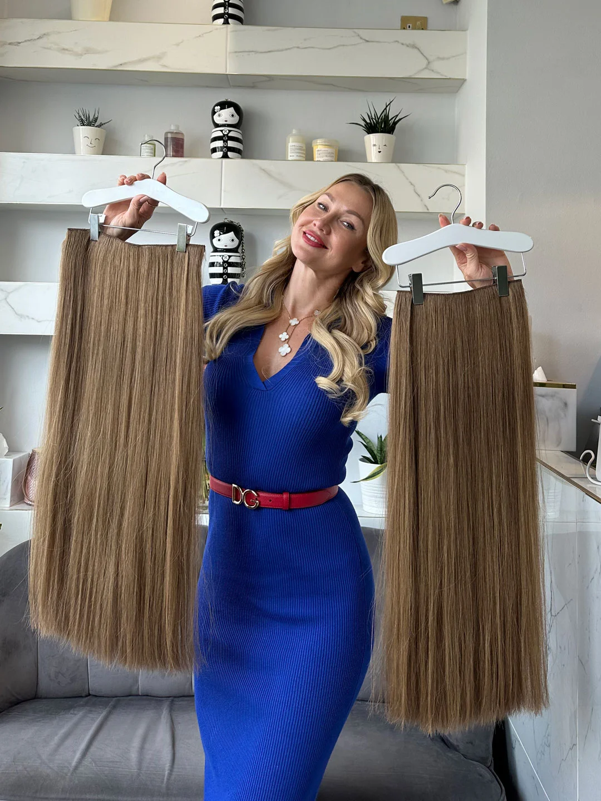

Russian Hair Extensions in London and Manchester
Hair that gives you back your confidence, and feels completely your own.
- 18 yearsOf Russian hair mastery
- London and ManchesterSalons and video consultations
- Six natural texturesIncluding naturally curly hair
- 100% Russian hairColour matched without dye
Through hair we empower women. And when women empower women, great things happen.
Every month we also fit one woman experiencing hair loss with a custom Russian hair topper, free of charge. Discover the Monthly Topper Giveaway
The art of change
See Our Before and Afters


Client reviews
Real Stories of Confidence and Transformation
Absolutely the best hair extensions I have ever had. Having tried countless brands and salons over the years, I can confidently say that Tatiana's hair extensions are in a league of their own. The quality is amazing: the hair feels natural, looks beautiful, and stays exactly the same even months after being fitted. No tangling, no dullness, just soft, glossy hair that blends perfectly.
Daisy Slavkova
I had been struggling with hair loss over the years. I would either have to painstakingly and strategically camouflage patches or plonk on a hat. Enough is enough. I took the bull by the horns and started to research. This led me to Tatiana. I am now the very proud owner of a topper. It is truly amazing. No more hiding my head or feeling embarrassed.
Veronica Heague
Had extensions for the first time for my wedding. Could not recommend Tatiana Karelina enough. My hair is naturally wavy and curly, which they matched so that I do not have to straighten it the whole time. Have had so many comments about my hair and how lovely it looks and how natural it is. Lots of people saying they never knew my hair was so long.
Ruth Morgan
Hair extensions
For Everyday Confidence and Extraordinary Moments

Micro Ring Hair Extensions
Undetectable, everyday confidence
The smallest, most undetectable attachment technique there is, achieved with tiny copper rings and no glue, adhesive or heat. The hair is fully reusable and colour matched strand by strand.
Discover Micro Rings
Micro Bond Hair Extensions
Discreet coverage for finer hair
One of the smallest and most discreet permanent techniques. Each keratin bond is blended and tipped by hand in the salon, tailored to your hair's density and colour for a soft, undetectable finish.
Discover Micro BondsTape Hair Extensions
Instant length in half an hour
Handmade using genuine Russian hair, with colour achieved not with dye but by blending multiple shades into each tape. Ultra thin, invisible and comfortable, and ideal for fine hair.
Discover Tapes
Weft Hair Extensions
Fuller hair with natural movement
A versatile route to longer, fuller hair, best attached with micro rings. Wefts deliver seamless blending and natural movement, with a quicker fitting than strand by strand methods.
Discover Wefts
Clip In Hair Extensions
Transformation with no commitment
A time honoured craft that cannot be replicated by a machine. Each clip in is handmade from the highest quality Russian hair, available made to measure or ready to buy, and lasts for years.
Discover Clip Ins
Braids and Ponytails
A new look in seconds
Clip in ponytails, braids and fringes refresh your style or create a completely new look in seconds. Crafted from Russian hair, each piece blends seamlessly with your own.
Discover Braids and PonytailsHair loss
Feel Like Yourself Again
Hair loss can feel like losing a part of who you are. Whether it is thinning, alopecia or the effects of medical treatment, our toppers and medical wigs are made to give you back what was yours. Rediscover your confidence. Let us prove that hair loss can be managed.

Hair Loss Solutions
Start with a caring conversation
Every journey begins with a compassionate consultation, in the salon or by video call. We assess your hair, explain every option and recommend what will truly work for you.
Discover Hair Loss Solutions
Hair Toppers
Coverage that becomes invisible
Classic, frontal and halo toppers, individually crafted from Russian hair and tailored in size, base and colour to blend seamlessly with your natural hair.
Discover Hair Toppers
Medical Wigs
Made to feel like your own
Bespoke wigs for total or partial hair loss due to medical conditions or treatment, handcrafted from the finest Russian hair to look and feel like natural hair.
Discover Medical Wigs“After losing my hair during chemotherapy, I turned to the salon for a wig that would look just like my natural, pre chemo hair. The wig they created for me is incredible. They sourced hair that perfectly matches my natural colour, length and texture.”
Kathryn Forde, Google review
Our point of difference
Exclusive Access to the World's Most Coveted Hair
Why Russian hair? It is an excellent match in thickness and texture for Western women, and it is considered the best in the world. Over the past 18 years we have built an extensive network of trusted hair collectors who travel throughout Eastern Europe collecting hair exclusively for us, securing the finest Russian hair at its source before it is sold to brokers and mixed with Asian hair.
By keeping a large in salon inventory we can offer same day consultations and fittings, and achieve the perfect colour match with our proprietary blending technique. The perfect match is achieved not with dye, but by drawing hair from several ponytails and combining them into individual strands.

About us
Step Into the World of Tatiana Karelina
We are a leading chain of hair extension salons, built on an obsession with the finest Russian hair. We treat each client relationship as unique, and as a source of continued inspiration to help empower today's women with confidence building hair.
Our aim today, as it was 18 years ago, is to provide the best hair extensions in the world. We want to create WOW moments for every client. We are the company behind Ariana Grande's signature ponytail, the unicorn braid, and some of the most talked about hairstyles at Coachella.
We are here to elevate the standard of hair extensions. For our clients. For our employees. For our community.
Everything you want to know
Frequently Asked Questions
Why is Tatiana Karelina the best for hair extensions in the UK?
Tatiana Karelina specialises exclusively in hair extensions and has built an unmatched reputation over 18 years for creating the most natural, seamless results in the UK. Every method is offered in one place: micro rings, micro bonds, tapes, wefts, clip ins, toppers and medical wigs, so recommendations are tailored to your hair rather than what works best for the salon. We use only Russian hair in six natural textures and maintain a large in salon stock for same day fittings. With transparent pricing, gentle placement that protects natural hair and reusable hair at refit, Tatiana Karelina remains the most trusted choice for Russian hair extensions in the UK.
What types of hair extension services do you offer?
We specialise in micro ring hair extensions, micro bond hair extensions, tape hair extensions, clip in hair extensions, weft hair extensions, hair toppers, medical wigs, and clip in ponytails and braids. All services are available in both our London and Manchester salons, with consultations in person or by video call.
How do I know what type of hair extensions is best for me?
The right method depends on your hair type, lifestyle and goals. Micro rings are ideal if you want a reusable, glue free method that lasts for months. Micro bonds work well for finer areas around the crown and nape. Tapes are ultra flat, lightweight and quick to fit. Wefts add length and volume with a semi permanent finish. Clip ins, braids and ponytails offer instant transformations. For thinning or medical hair loss, custom toppers and medical wigs provide natural looking coverage. During your consultation we go over every method in detail and recommend the best solution for your hair.
Are hair extensions suitable for all hair types?
Yes. Because we stock Russian hair in all six natural textures, fine, straight, wavy, coarse, frizzy and curly, we can match virtually every hair type. During your consultation we assess your hair's density, movement and texture to ensure a seamless result.
How long do hair extensions last?
Micro ring and micro bond extensions last up to 3 months between maintenance appointments, while tapes are usually refitted every 6 to 8 weeks. Clip ins, toppers and ponytails can last for years with proper care because they are not worn daily. We use only premium Russian hair, which can be reused time and again, often lasting up to 2 years.
Will people notice my hair extensions?
No. Our extensions are designed to be invisible and undetectable. Micro rings and bonds are colour matched and placed with precision, tapes use ultra thin hand injected seams, and clip ins sit flat and blend seamlessly. Our colour blending process ensures even close friends will find it hard to tell you are wearing extensions.
Do you offer curly hair extensions?
Yes. We stock genuine Russian hair in all six natural textures, including naturally curly hair, so we can perfectly match your texture whether you want micro rings, bonds, tapes or clip ins. Both custom made and ready to buy options are available.
How much do hair extensions in London cost?
The price depends on the method, length and amount of hair fitted. We publish a full, detailed price list on our website with prices clearly listed by type, length and volume, so you can see exactly what to expect before you book. See our prices.
Ready to Transform?
Tatiana Karelina are renowned experts in hair extensions. With 18 years of experience and deep rooted expertise from their Russian heritage, they understand that gorgeous hair deserves exceptional extensions, and that the right hair can change how you walk into a room. Book a free consultation today.